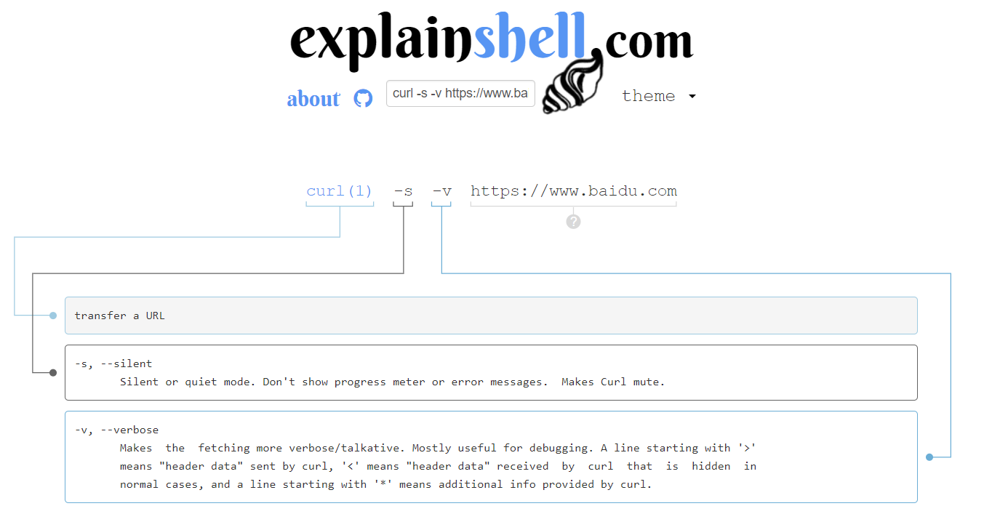

1 动词 路径 协议/版本
2 Key1: value1
2 Key2: value2
2 Key3: value3
2 Content-Type: application/x-www-form-urlencoded
2 Host: www.baidu.com
2 User-Agent: curl/7.54.0
3
4 要上传的数据
0.请求最多包含四部分，最少包含三部分。（也就是说第四部分可以为空）
1.第三部分永远都是一个回车（\n）
2.动词有 GET POST PUT PATCH DELETE HEAD OPTIONS 等
3.这里的路径包括「查询参数」，但不包括「锚点」
4.如果你没有写路径，那么路径默认为 /
5.第 2 部分中的 Content-Type 标注了第 4 部分的格式
1.打开 Network
2.地址栏输入网址
3.在 Network 点击，查看 request，点击「view source」后可以看到请求的前三部分了
4.如果有请求的第四部分，那么在 FormData 或 Payload 里面可以看到
1 协议/版本号 状态码 状态解释
2 Key1: value1
2 Key2: value2
2 Content-Length: 17931
2 Content-Type: text/html
3
4 要下载的内容
1.打开 Network
2.输入网址
3.选中第一个响应
4.查看 Response Headers，点击「view source」，你会看到响应的前两部分
5.查看 Response 或者 Preview，你会看到响应的第 4 部分
curl命令是一个利用URL规则在命令行下工作的文件传输工具。它支持文件的上传和下载，所以是综合传输工具.
curl(选项)(参数)
-A/--user-agent 设置用户代理发送给服务器
-b/--cookie cookie字符串或文件读取位置
-c/--cookie-jar 操作结束后把cookie写入到这个文件中
-C/--continue-at 断点续转
-D/--dump-header 把header信息写入到该文件中
-e/--referer 来源网址
-f/--fail 连接失败时不显示http错误
-H/--header 自定义头信息传递给服务器
-o/--output 把输出写到该文件中
-O/--remote-name 把输出写到该文件中，保留远程文件的文件名
-r/--range 检索来自HTTP/1.1或FTP服务器字节范围
-s/--silent 静音模式。不输出任何东西
-T/--upload-file 上传文件
-u/--user 设置服务器的用户和密码
-w/--write-out [format] 什么输出完成后
-x/--proxy 在给定的端口上使用HTTP代理
-#/--progress-bar 进度条显示当前的传送状态
# curl https://www.baidu.com
执行后，www.linux.com 的html就会显示在屏幕上了
中间加上各种参数可以自行百度并尝试，本次任务所用的命令curl -s -v https://www.baidu.com，在explainshell中解释如下：
